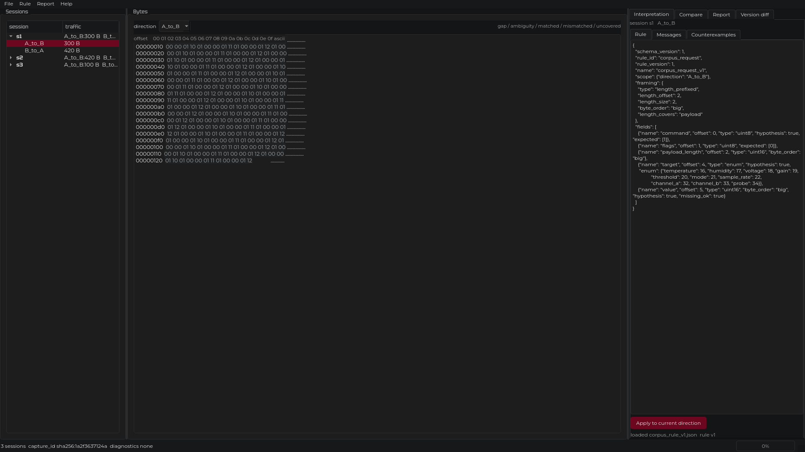
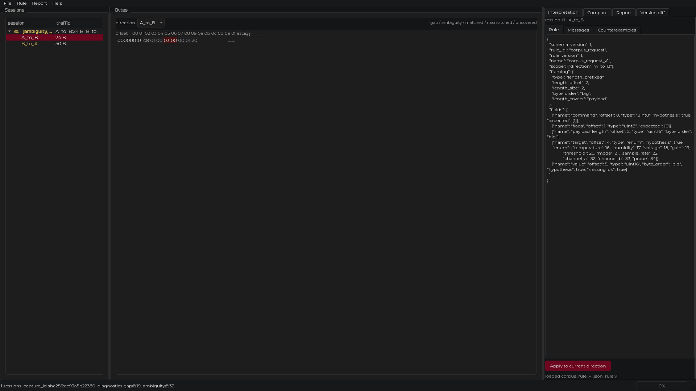
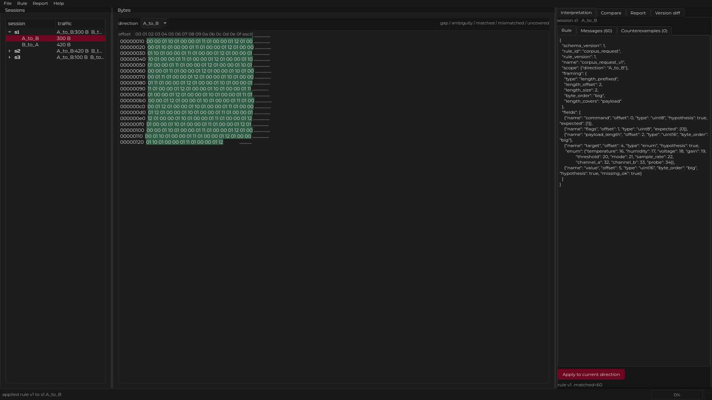
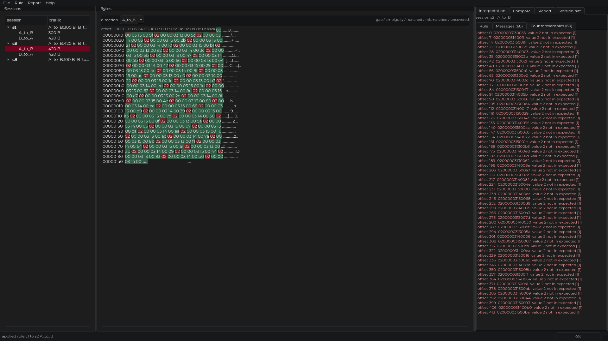
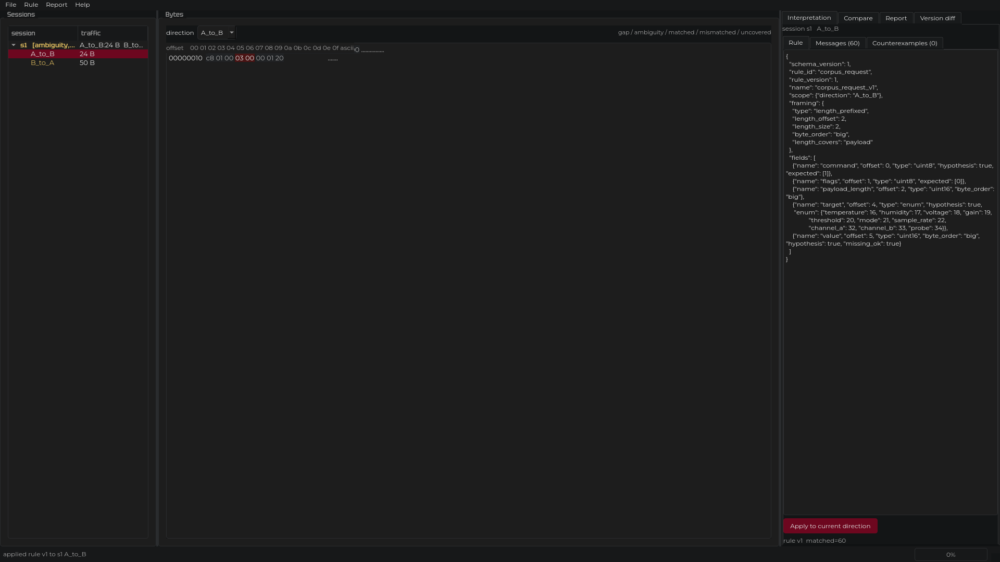
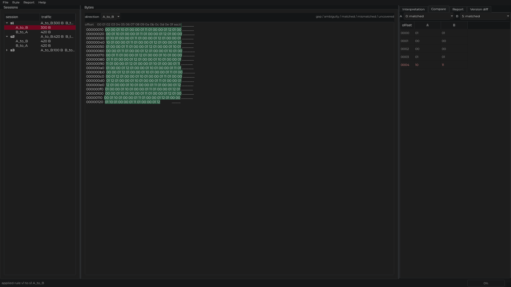
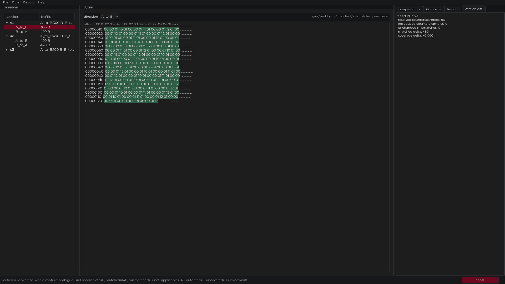
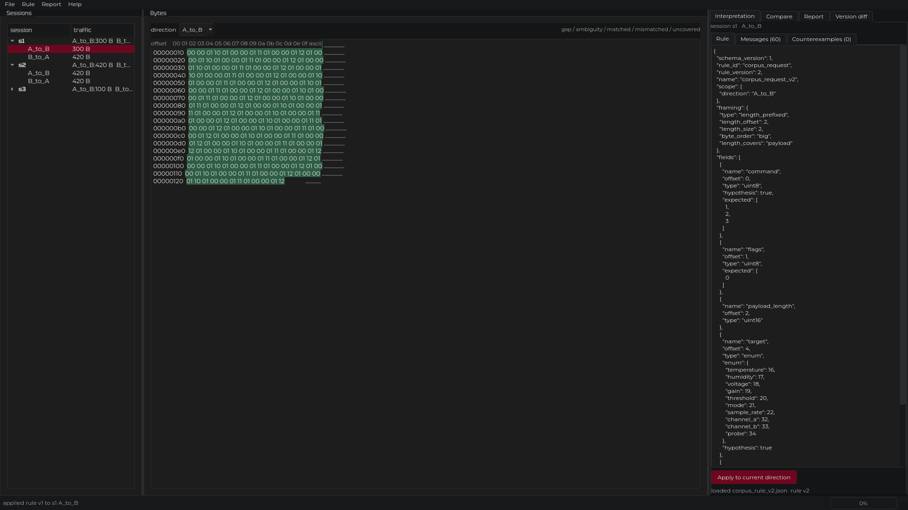

Даны захваты трафика (pcapng) и журнал действий устройства. Спецификации нет.
Нужно восстановить структуру сообщений и сохранить доказательность:
Вход: захват и журнал. Выход: проверяемая интерпретация с контрпримерами.
Три независимых модуля, связанные форматами JSON.
Форматы зафиксированы схемами JSON Schema (draft 2020-12) и не меняются молча.
Границы TCP-пакетов не являются границами сообщений.
Правило — это декларативный JSON. Оно описывает, где заканчивается сообщение и что означают поля.
hypothesis — это предположение о смысле, а не факт.Одно правило описывает весь поток. Сообщения не перечисляются вручную.
Применение правила даёт по каждому сообщению один из статусов:
matched, mismatched, incomplete, ambiguous, uncovered, not_applicable.mismatched — это контрпример. Он привязан к байтам и к пакету-источнику.
Совпадение на примерах не является доказательством. Правило проверяется на всём корпусе, а контрпримеры сохраняются, а не отбрасываются.

Слева сессии, в центре байты, справа применение правила и результаты, внизу происхождение байта и диагностики.


Сессия помечается, когда в её потоке есть пропуск или неоднозначность. Байт под полем правила подсвечен по статусу; пропуск виден отдельно.
1. Наблюдение: байты запроса начинаются с 01 00 00 01. Значение по смещению 2 укладывается в границы сообщения.
2. Гипотеза: по смещению 2 лежит длина в два байта, старший байт вперёд; сообщение — заголовок и полезная нагрузка.
3. Проверка на корпусе: правило фрейминга по длине разбирает все потоки без остатка.
4. Контрпример: правило объявляет код команды 1, но в тех же сессиях встречаются 2 и 3.
5. Уточнение: множество допустимых команд расширяется до 1, 2, 3.
6. Повторная проверка: контрпримеров нет.
Наблюдение отделено от гипотезы на каждом шаге.


Правило первой версии: допустимый код команды только 1.
Пропуск не заполняется: сообщение поверх него помечается как неполное.


Уточнение затронуло только список допустимых команд, структура правила не менялась. Старый результат остаётся на диске со своей версией и помечается устаревшим.

Что не сделано и остаётся открытым:
Интерпретация верна для проверенных захватов и молчит вне них.
1, 2, 3; смещение 4 — идентификатор параметра; смещение 5–6 — значение при записи.Готово к развитию: разбор ответов, проверка на реальных захватах, расширение набора чтений.
Репозиторий: Pavel1778/madrigal-protocol-lab
Исследование целиком: REPORT.md, docs/REFERENCE_INVESTIGATION.md.
Сценарий демонстрации: docs/demo.md.